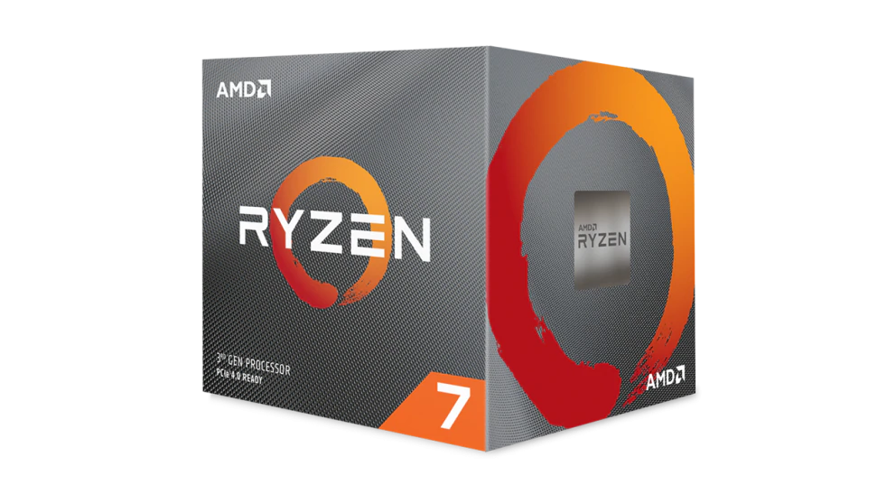
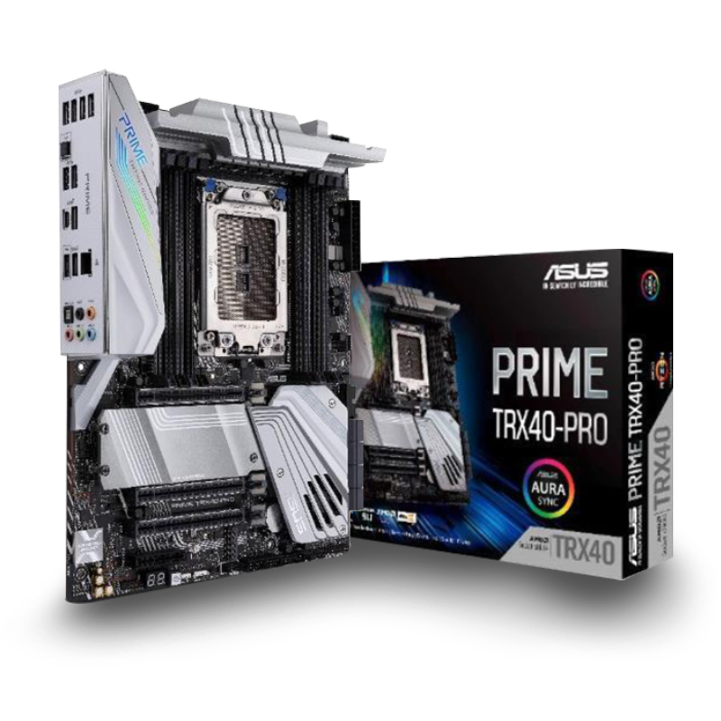
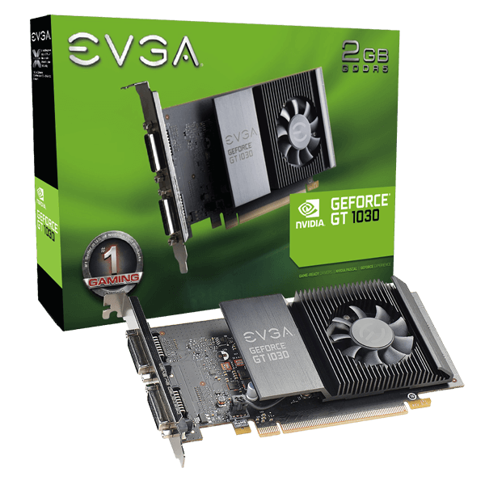
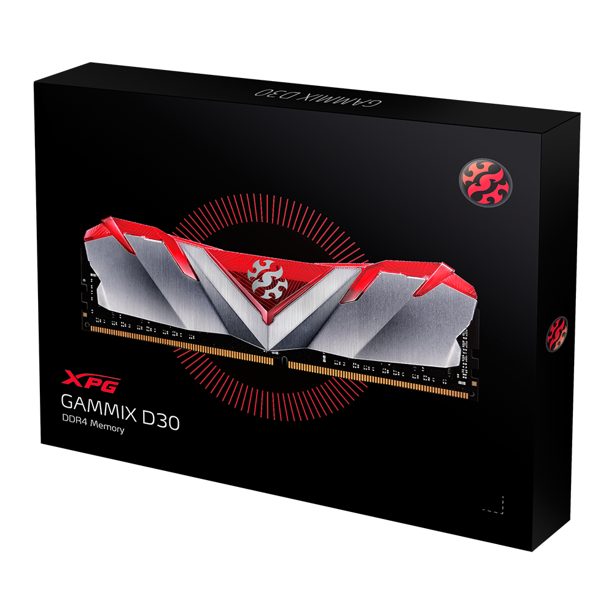
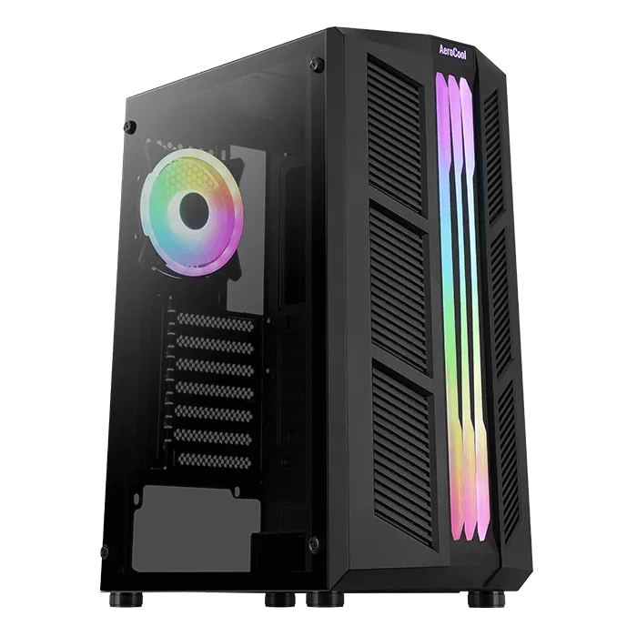
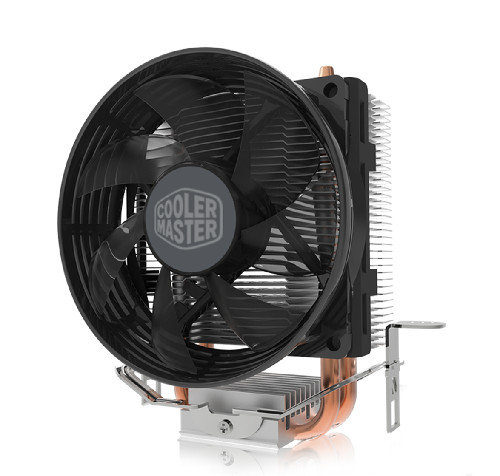

Productos principales que te ofrecemos
Precesador AMD RYZEN R7-3800X (3,9-8CORE) AM4

Caracteristicas:
- # de núcleos de CPU8
- # de hilos 16
- Reloj base 3.9GHz
- Reloj de aumento máx Hasta 4.5GHz
- Caché L1 total 512KB
- Precio: 1'580.000
Board Asus Prime TRX40 PRO

Caracteristicas:
- AMD AM4 Socket 3rd and 2nd AMD Ryzen™/2nd and 1st Gen AMD Ryzen™ with Radeon™ Vega Graphics Processors
- 3rd Gen AMD Ryzen™ Processors
4 x DIMM, Max. 128GB, DDR4 4400(O.C)/4266(O.C.)/4133(O.C.)/4000(O.C.)/3866(O.C.)/3733(O.C.)/3600(O.C.)/3466(O.C.)/3400(O.C.)/3200/3000/2933/2800/2666/2400/2133 MHz Un-buffered Memory
- Integrated Graphics in the 2nd and 1st Gen AMD Ryzen™ with Radeon™ Vega Graphics Processors
- Precio: 630.000
Tarjeta grafica EVGA GeForce GT 1030 SC, 02G-P4-6338-KR, 2GB GDDR5, Single Slot

Caracteristicas:
- Numero de parte 02G-P46338
- Base 1290/1544
- Chips BIOS 1
- Precio: 480.000
Disco duro 1TB Western Digital Blue 7200rpm

Potencie el almacenamiento de su PC con los discos WD Blue,
la marca diseñada para las PC de escritorio y todo en uno con diversas capacidades de almacenamiento.
Precio: 845.000
Memoria RAM 16Gb 3000Mhz XPG GAMMIX D30 RED

Caracteristicas:
- Diseño vanguardista con forma de ala
- El rendimiento para ganar
- Aumento de la velocidad del reloj con Intel® XMP 2.0
- Precio: 284.000
Chasis Prime ARGB

Caracteristicas:
- Se proporciona equipada con un ventilador RGB direccionable de 12 cm
- Panel lateral completamente de cristal templado para mostrar todo lo que tu torre tiene que ofrecer
- Admite refrigeración líquida en la parte frontal y trasera de la caja
- Soporta refrigeración por aire en la parte frontal, superior y trasera de la caja
- Soporta cooler de CPU de hasta 159 mm de altura
- Precio: 259.000
Disipador COOLER master hyper T20

Hyper T20 es un enfriador de CPU con alta eficiencia y baja supresión de sonido. La instalación de la hebilla es fácil de instalar y quitar.
Se aplica tanto a los sistemas Intel como a los sistemas AMD.
Con contacto directo con las tuberías de calor, Hyper T20 proporciona el rendimiento optimizado para los enfriadores de CPU.
El marco del ventilador está diseñado con un material especial antipolvo, evitando el polvo del exterior de manera efectiva.
Precio: 58.000